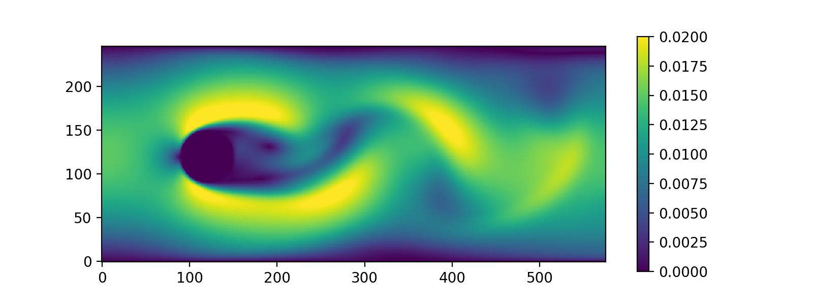
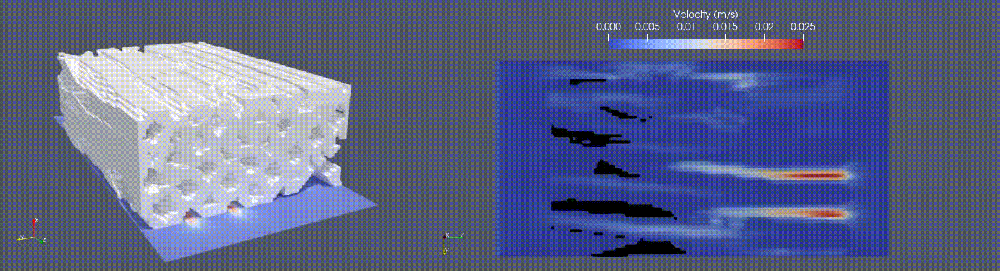
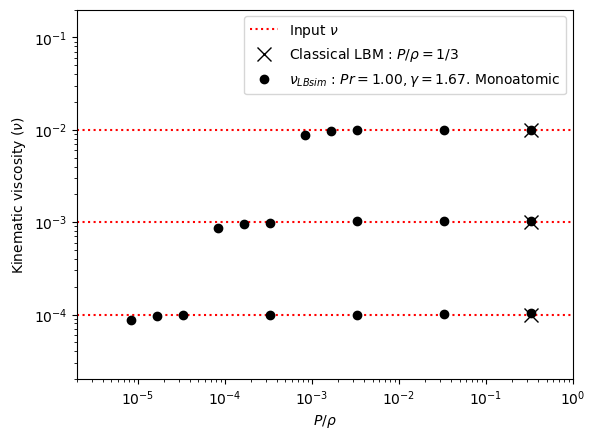
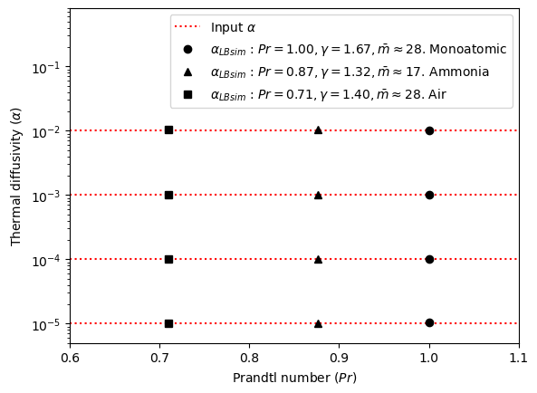
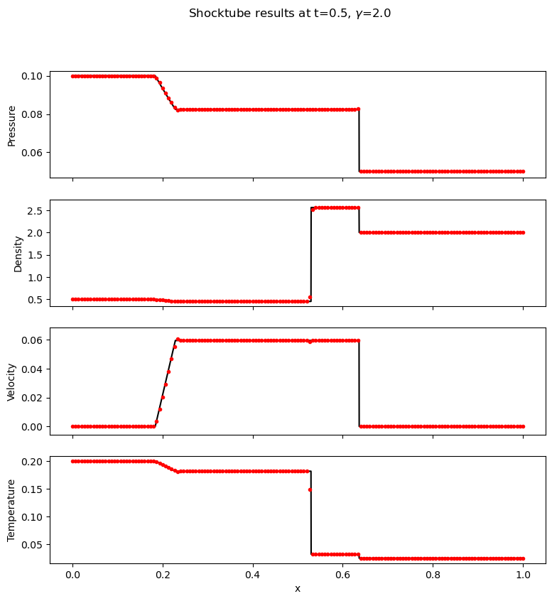
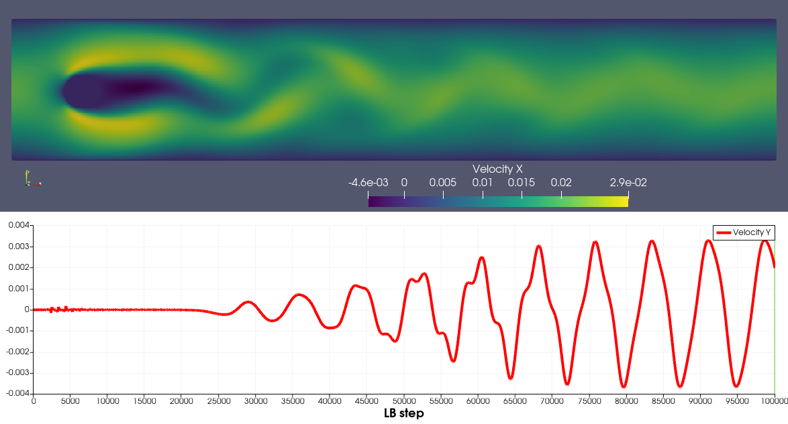

Validation and demonstration
MARBLES undergoes significant testing to ensure correct operation. MARBLES is routinely tested on different compilers and platforms through the GitHub Actions interaface. The regression tests are automatically run on these different platforms and checked for number of different types of errors, e.g., floating point exceptions, memory-bounds checks, and memory allocation/deallocation.
The regression test suite contains several different cases. We present a few here.
Flow around a sphere
This validation case is for the flow around a single sphere (Reynolds number of 100). The input file for this case is located in the Tests/test_files/single_cylinder. A 2D version of the same case is located in Tests/test_files/single_cylinder_2d. This case was run to steady state and resulted in a drag coefficient of 3.096, a lift coefficient of 0.8396, and a Strouhal number of 0.2986. These are within the acceptable range for reference values for this case. The velocity magnitude is shown here:
{kind=link}
Flow in a porous media
This demonstrates MARBLES ability to simulate flow through complex, porous media. An STL file, representing a section of a porous pine wood chip, obtained from an experimentally imaged 3D file,, defines the geometry for this case.
{kind=link}
Viscosity verification
This test case demonstrates MARBLES ability to maintain the correct viscosity over a wide range of temperatures. Viscosity is computed from the simulation by tracking the maximum of velocity over time arising from an initial condition consisting of a sinusoidal velocity perturbation. The temperature is not restricted to 1/3, but it can be set to any value less than or equal to 1/3. This feature has been enabled by incorporating product-form of the equilibrium distribition which improves stability due to maximisation of the entropy and the incorporation of an extended lattice Boltzmann approach which adds a non-local correction term to the pressure tensor to correct the insufficient Galilean invariance of the standard lattice at the third order moment.
Input and post processing files: Tests/test_files/viscosityTest/
{kind=link}
Thermal diffusivity verification
This test case demonstrates MARBLES ability to maintain the correct thermal diffusivity over a wide range of temperatures, as well as at different Prandtl numbers, adiabatic exponents and mean molecular masses. Themal diffusivity is computed from the simulation by tracking the maximum of temperature over time arising from an initial condition consisting of a sinusoidal temperature perturbation. The capability to solve for temperature has been enabled by an additional lattice which conserves the total energy of the fluid. The new lattice representing energy has been two way coupled with the existing momentum lattice which had been augmented with product-form equilibrium and extended pressure term to compensate the third order error. The new energy lattice adds an energy equation, while the multi-relaxation on the energy lattice enables a variable Prandtl number and an adjustable adiabatic exponent. The mean molecular mass is allowed to be a variable because the product form of the equilibrium on the first lattice allows the variance of the equilibrium distribution to be RT instead of T.
Input and post processing files: Tests/test_files/thermalDiffusivityTest/
{kind=link}
Sod test tube
This test case demonstrates MARBLES ability to solve compressible flows with realistic parameters of practical interest. The correct position of the wave structures confirm that the speed of sound is correct in the thermal version of the solver. The model is the same as that built for the thermal diffusivity test. The sod shock test marks the completion of the MARBLES solver to the extent of a contunuum limit, single-component, single-phase, transient computational fluid dynamics solver with mass, momentum and energy equations.
Input and post processing files: Tests/test_files/sodTest/
{kind=link}
Flow around a cylinder in a channel
This test case solves flow around a cylinder confined in a channel and validates against the data from “Schäfer, M.; Turek, S.; Durst, F.; Krause, E.; Rannacher, R. Benchmark Computations of Laminar Flow Around a Cylinder, 1996. https://doi.org/10.1007/978-3-322-89849-4_39.” The input files included with MARBLES correspond to case 2D-2 of the “Schäfer et al.” benchmark. The Strouhal number is found to be 0.28 from the simulation, in agreement with the range from literature.
Input and post processing files: Tests/test_files/cylinder_turek_2d2/
{kind=link}